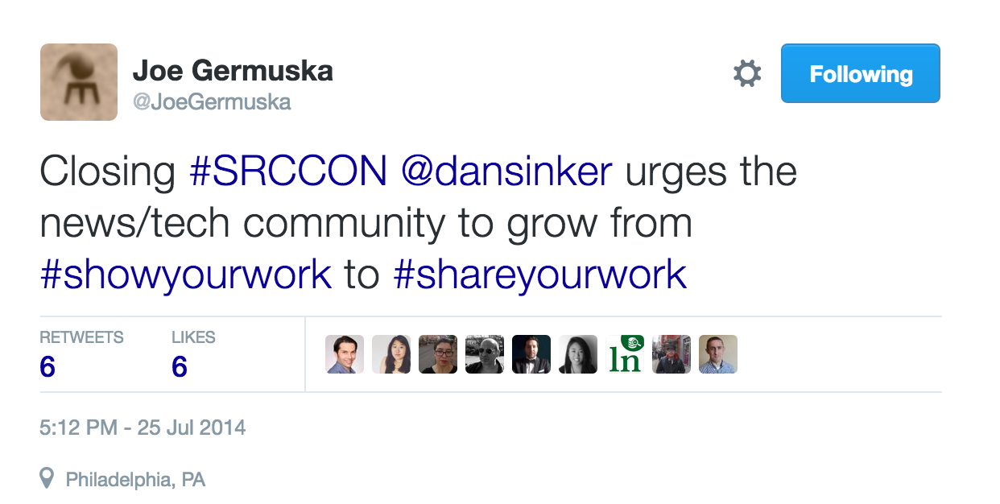
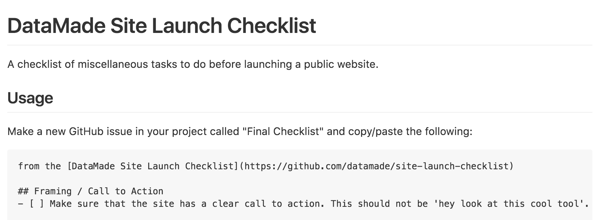
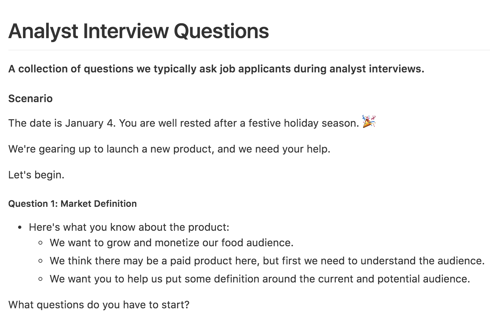
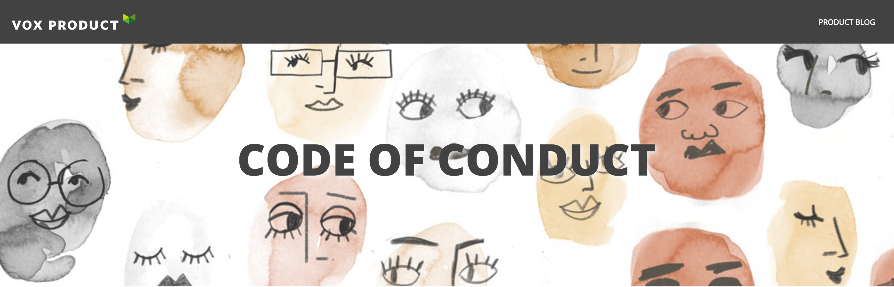
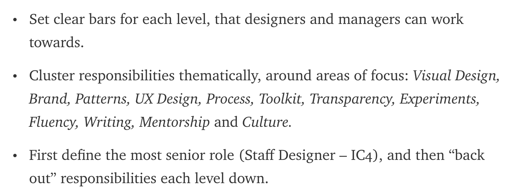
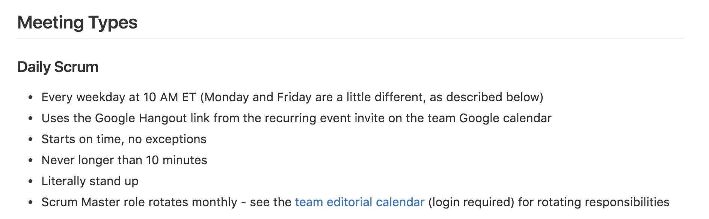
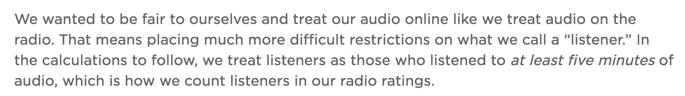
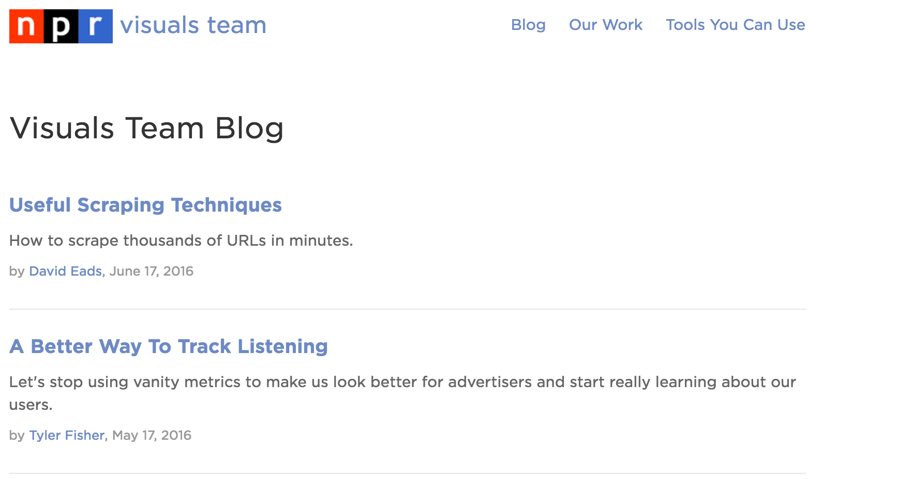
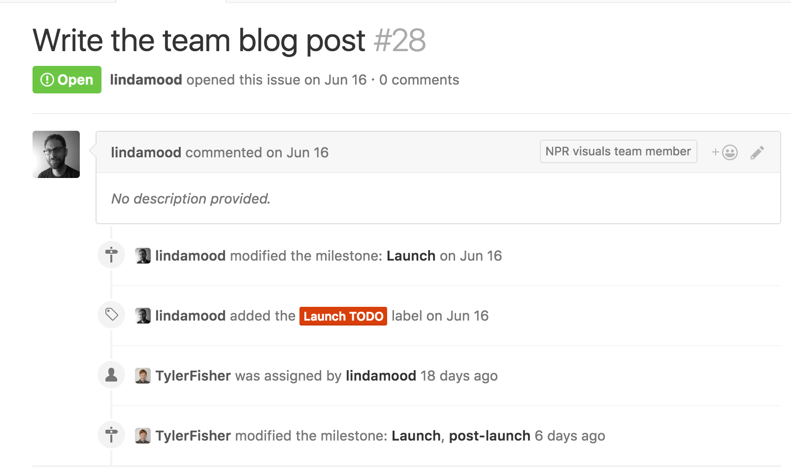
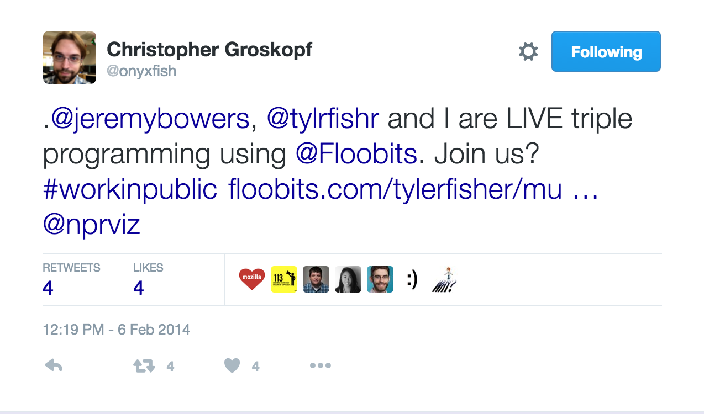

Radical Openness
SRCCON 2016 // Tyler Fisher
Hi, I'm Tyler. I have a lot of slides, so I'm gonna do my best Jeremy Bowers and go pretty fast. This is a talk about being radically open about your work. It's a practice I try to live at my job as a news apps developer at NPR Visuals. I hope to convince you that you can and should do this as well.
Chicago Tribune News Apps Team, 2011
This is the motto of the Chicago Tribune News Apps Team and one that I think has spread in our community since. Its spirit, as I understand it, was to emphasize that showing your work is necessary to prove that your findings in your story are correct.

Dan Sinker, SRCCON 2014
At THIS VERY CONFERENCE, at the VERY FIRST COUNTDOWN, Dan Sinker gave his Sermon on the Mount, as it were, and argued for a pivot from show your work to share your work. To make your work not only seen, but reusable.
These Are Great
But work is more than open source code.
Show your work, share your work, however you put it, they're great mottos to live by in this community. We only grow if we grow together. But I think we're forgetting important parts of work beyond our code. I'm going to talk about three major categories of work and share some already open source examples.
Work is process
Work is process! Roughly, this is about, how did your team or organization work together to make what you made? I've been to every SRCCON, and each year I have at least one heavy conversation about how we work within our newsrooms. I think opening our process can help us all learn how to do this better. Here's some examples.
The brainstorming consisted of listing out key questions the story needed to address. Any and all questions were written down, organized and considered from the perspective of the audience we pictured enjoying this project. To make the idea of the audience more tangible, the team went through an exercise in which we identified our audience(s) for the project, what their needs are and what functionality could be built to satisfy those needs.
How do you brainstorm?
How and Why Cross-Disciplinary Collaboration Rocks, Wes Lindamood, NPR Visuals
How do you brainstorm? My colleague at NPR, Wes Lindamood, wrote a fantastic post on Source a few years ago about our T-shirt project. Less about the code we built, and more about how we made decisions. There's a great section on the brainstorming process, which included an audience-centered design exercise and key decisions about focus and intent.
Keeping a prioritized backlog of planned work is how we effectively manage an iterative development cycle such that we move toward our goal incrementally. Simply delivering more frequently and organizing our work into “sprints” is not sufficient. We need to track our forward progress at regular intervals, reflect on what we’ve learned, and adjust our plans to keep moving toward our goal.
How do you decide what to work on?
Agile Principles & Practices, 18F Guides
Everyone cuts features. How do you decide what to work on? Many of us use some modification of agile software methodology. 18F has a really great guide to how they do it, including a strong discussion of creating a backlog of work and prioritizing work inside that backlog.
In a sequential visual story about the end of Chicago’s public housing , we had initially tried to use a right carat on the right side of the page. In doing so, we observed that users were having a hard time finding the entry point to the experience. As a variation, we tried animating the right carat to draw attention to it and finally tried to use the begin button. In the end, the begin button proved to be the most effective way to enter this story.
How did you pivot when things failed?
The Evolution of NPR’s Picture Stories, Wes Lindamood, NPR Visuals
Inevitably, you're going to make a major feature, test it, and figure out that it doesn't work. How do you ensure you can pivot without the entire project falling apart? This isn't quite that example, but we launched a project and found the way we were getting users into the experience wasn't working. So we changed it.

How do you publish?
Site Launch Checklist, Datamade
Everyone has their own checklists for how they publish, but they're hard to make. There's so many things to think of! I love Datamade's checklist, especially its first item: "Make sure that the site has a clear call to action. This should not be 'hey look at this cool tool'. Rather, it should be a way for someone to engage in a meaningful way on the issue being presented."
Work is people
Work is people. The news industry, and frankly, most of Western professional culture, has issues with who and how we hire, and how we treat our workers. This community has the unique ability to work at some of these problems because we have the tools at our disposal to open up how we operate. Let's talk about some of them.

How do you hire?
Analyst Interview Questions, Philadelphia Media Network
How do you hire? There's so much insider knowledge about how to get a job that you learn as part of being in the right networks. You can anticipate the questions you might be asked, the line items on your résumé you should talk about. If we want to diversify our newsrooms, that means hiring people who don't come from those backgrounds. A great way of evening the playing field is to open up your interview questions. Philadelphia Media Network is doing this right now with their new analytics team!

How do you interact?
Code of Conduct, Vox Media
How do you, on a day to day basis, interact with the people you work with? This is one of my favorite examples in the presentation. Vox Media has an open source code of conduct that includes how to be supportive and humane with your colleagues as well as discussions of unacceptable behaviors including microaggressions and tone policing. There is a thorough process on the reporting process for breaches of conduct and how the company will handle them. It's a hugely important document, written in plain language, and one more media organizations should consider open sourcing to make your organization's values apparent to the world.
We make people care. That’s our mission, and I’m fucking proud to say so.
What is your mission?
What Is Your Mission?, Brian Boyer, NPR Visuals
What is your mission? It is so important to communicate to the world why the people on your team are there. What do you, as a whole, believe in? My boss, Brian Boyer, communicated our mission in the brusque way that, for better and for worse, only he can. When people meet me as a member of that team, they know what we do and why I'm there.

How do you organize?
BuzzFeed Product Design Roles 2.0, John Niedermeyer, Buzzfeed
Our community is so new. We don't know what the career paths look like. So how are we organizing our teams right now? Let's open source our roles, titles and organization so we can learn from each other. Buzzfeed has done this with their product design team, and it's a very instructional read about how a top-flight, large design team is organized.

How do you meet?
Meeting Guidelines, INN
Meetings suck. It is known. We can make them suck less if we can learn from each other about how we effectively run our meetings. INN has the the fucking motherlode of open process and documentation. This is one of my favorite documents in the repository, a whole bunch of great guidelines on how to run meetings and how to avoid them.
Work is results
This is my biggest item on my list. Work is results. How can we learn from each other about how to make better journalism if we don't share what worked and what didn't with our audience? We can't be so scared about talking about our analytics, our successes and failures.

How did you measure performance?
A Better Way To Track Listening, Tyler Fisher, NPR Visuals
How are you measuring performance? Is it pageviews? I hope not. I wrote about how we tracked listenership in our election app. We measured performance by tracking listeners and non-listeners, and we defined listeners as five minutes of audio. Definitions matter.
When was your product successful? When did it fail?
Do Visual Stories Make People Care, Tyler Fisher, NPR Visuals
When were your products successful? When did they fail? Why? I wrote about our series of sequential visual stories called Look At This. I found that one of our key metrics, engaged user completion rate, were often higher when we included audio in our stories.
Why share?
I could go on for hours about this. Quickly, here's some reasons why I think you should share.
Preparation to share encourages thorough documentation.
If you plan on sharing your process or your results, it makes you better at documentation. And documentation is inherently good.
Your process and results are not your competitive advantage.
Your content is.
Some people argue that their process is their competitive advantage. It's not. I guarantee it's not that good. And if your content isn't your main competitive advantage, then what are you even doing here?
The news industry will only grow together.
Here's my sappy argument. If we're going to grow together, if we're going to save journalism like we all joke we're going to but actually really believe we're going to, we have to have to have to have to do it together. Competition breeds innovation, but that doesn't mean we need to be secret about it.
How to be more open
And finally, let's talk about how to do this.

Have a team blog and publish often.
Team blogs are great! Build one. Jekyll and Github Pages is fun and easy.

Make reflection and writing a default part of your process.
This is the most important one: make reflection and writing a default part of your process. Here's a Github ticket from our last project that told me to write something for the team blog. So I did. And I could justify taking the time to do it because it was assigned to me as work during our sprint.

Or just go all the way
Or just go all the way and live program like I did with Jeremy Bowers and Chris Groskopf on a Backbone app we had no idea how to build. It's up to you.
bye come talk about recording music at home at 8:30 in classroom 314 k thx
also tomorrow come to my session about better analytics at 2:30 in classroom 305
k thx
bye